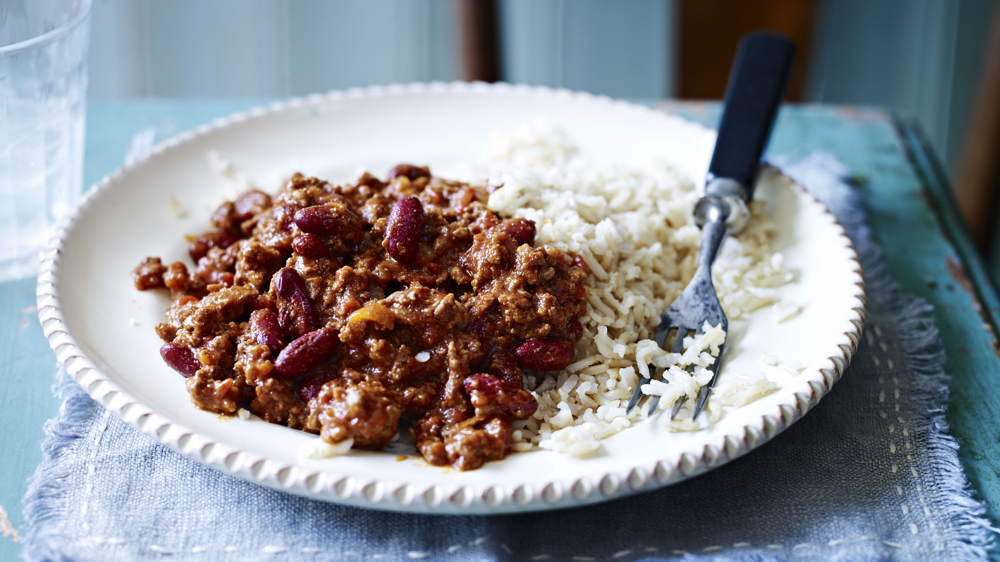

Chilli Con Carne

Chilli Con Carne is loved all across the world as a simple but delicious meal. There are many ways of making it but it generally always has rice and ground mince meat.
We will focus on a chilli dish that involves the following ingredients:
Ingredients
- Rice
- Mince Meat
- Beans
- Spices
Instructions
- Brown ground beef in a pot.
- Add diced onions, garlic, and chili powder.
- Stir in canned tomatoes and kidney beans.
- Simmer until flavors meld.
- Serve your Chilli con Carne hot.